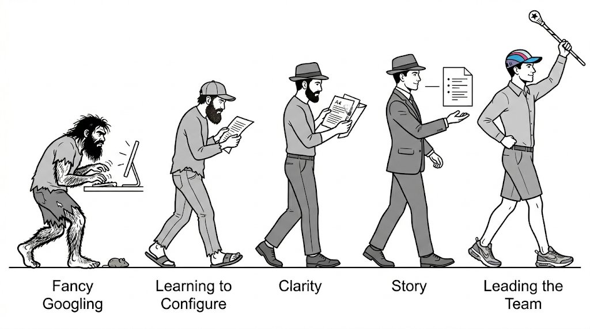

Most writing about LLM tools focuses on productivity: faster drafts, quicker summaries, writing feedback. Those are truly nice steps forward and bring value. The more useful question for me is whether these tools can help a researcher, analyst, or leader get out of their own head: find the argument inside the material, communicate it graphically and in writing, and build a story worth following.
I spent twenty-two years building enterprise analytical data platforms for a Fortune 10 healthcare company serving hundreds of external organizations and thousands of users with multiple reporting solutions and data warehouse products on premises and in the cloud. I was never able to define and communicate some of the most important things I learned.
The problem was the time and effort required to extract all of that experience, sort it out, and then figure out how to communicate it in a way people would actually follow. My need to close that gap was rising at the same time LLM tools were rising to meet it. That alignment is what this paper is about: accumulated experience looking for a way out, and tools finally capable of helping find it.
Not only have the tools improved. I have learned how to use them for greater impact.
Every attempt to write about the platform came out as an internal briefing. Emails outlining technical decisions. Project plans. Twenty-page analyses comparing reporting tool capabilities, licensing models, embedded versus user-based cost structures by product. Dense, context-dependent, built for people already inside the problem. Useless for anyone trying to decide whether the problem was worth solving.
I was asking the wrong question of the wrong tool in the wrong way. "Summarize this" produces a summary. "Research this topic" produces a research report. Neither is thinking. Neither is writing. Neither is storytelling.
The tool was doing what I asked it to do. LLM tools can do far more, especially today. I just had not figured out what to ask for.
The early sessions produced research. What I needed was clarity and argument.
"Research X for industry best practices" produces a well organized and thorough research report. But it was flat with no judgment about what actually matters. I got that output reliably.
Part of what I was running into was the limit of what the tools could actually do at that stage. They could not produce reliable diagrams. They could barely maintain consistent formatting across a long output. And when sessions got long and complex, they would lose context. Something we had worked out earlier would surface again as an open question. A conclusion we had reached would quietly disappear. It was not that the tools were wrong. They were hitting a ceiling I did not yet understand. Some of this was tool maturity. The products were evolving under me in real time. What felt like a methodology problem was sometimes the tools catching up. That distinction matters for where the methodology actually starts.
The white paper drafts from this period had no opening argument, no narrative pull, and no reason for a stranger to keep reading.
Built reusable prompts in a notepad. Attached context documents to carry state across sessions when the context window exhausted. Started asking the tool to embody a specific role: analyst, skeptic, domain expert. The outputs changed when the question changed. Something was beginning to shift.
Looking back, my use of these tools moved through distinct phases. The phases are not a ladder everyone climbs at the same speed. In my observation, most people get stuck early. The gap between Phase 1 and Phase 5 is not about your skills outside of the tool. It is about what you expect from it and what you are willing to bring to it.

I don't think any of the tools would have supported the work I do now six months ago, definitely not nine or twelve months ago. Sustained context across a complex multi-session project, coherent pushback on argument structure, professional-grade artifact production. The methodology matters. But the capability had to exist first.
Phase 4 is when the question shifted from "create a data table with these columns" to "what assertions are not backed up?" That question only gets a useful answer if you ask it before you start drafting.
The first white paper in this series took shape when I stopped loading source material and asking for a summary. I started with a blank brainstorming session: what is the argument, what is the story, what does the reader need to walk away knowing. Content came after.
Phase 5 required two style guides, not one. The first was extracted from my own writing. It removed the patterns that make output sound generated. The second encoded my voice. It put me back in.
Those two guides changed the output more than any other single investment. But they only work because the session protocol keeps the tool from drifting away from them between turns.
Most people think the methodology is in the prompts. It is not. The prompts are the visible part. The methodology is in the infrastructure you build around them before you ever start drafting.
Phase 5 output looks different from Phase 2 output because of habits, mindset, and the infrastructure you build for your work.
The industry has a name for this now. What is crystallizing in 2026 as "context engineering" focuses on the full information environment a model operates in: not individual prompts, but the systems that manage context across sessions, roles, and workflows. The session protocol, the project knowledge base, the system prompt, and the provenance framework described in this paper are a working version of what that discipline looks like in practice for a knowledge worker. The industry named it recently. The practice came first.
A simple statement of the goal or argument is needed before any real writing starts. Sometimes I arrived with it. More often I found it by telling the tool I wanted to write something about X for some purpose Y, and that I wanted help working it out. The tool is good at pulling the argument out of you. It asks who the audience is. It asks what someone should leave knowing. It presses for clarity when the answer is vague. That session is worth running. Just do it before the drafting begins.
Added top-level instructions to the tool itself: challenge my ideas, be a stoic, keep it brief, do not flatter me. These run before any project context loads. They set the default stance.
Used Copilot to extract my own writing style from work emails without pulling sensitive content into the project. The prompt asked for twenty examples of long-form writing from a period before I used LLM tools at all, on topics complex enough that I would have written carefully. For each, it pulled a representative paragraph and assessed the style patterns across all of them. That report, with the examples included, became the foundation of the style guide here.
Built a Writing Style Guide as a project file. Named six voice modes. Made the tool audit every draft for mode drift.
Built a Banned Patterns document across five categories: words (delve, pivotal, multifaceted); openers (in an era of); structures (three-adjective chains, not only X but also Y); closings (in conclusion); and tone patterns like manufactured urgency and inflated authority. The em dash gets its own line. Updated after every session.
Stopped asking "research this" with no context. Started by creating projects with instructions and using research to build context, then asking "how do we solve this?" or "does X make sense given what we know?"
Separated research sessions from drafting sessions from editing sessions. Each requires a different mode. Running them together produces worse output in all three.
Pushed back when the output drifted. Too hyperbolic, too generic, too diplomatic. The tool learns the correction within the session. Accepting drift and editing around it produces worse work than refusing the drift outright.
Treated the provenance block as a discipline, not a formality. If I could not populate all five fields, something about the work was unresolved.
This is less about prompting technique than about the infrastructure you build around the session and the discipline you bring to how sessions are structured. Two categories matter most.
Tool-level instructions — persistent rules the tool applies in every session, regardless of project.
Project manifest — the charter, context files, and session protocol that hold the thread across sessions.
Style guide for formatting — structure, layout, and visual consistency rules.
Style guide for writing — voice modes, banned patterns, argument discipline.
Google Docs as shared layer — style guides and reference documents that need to travel across projects live here, not inside any single project.
Separate projects for research — one project collects data, builds context, and assembles the raw material. It does not draft.
Separate projects for writing — a different project takes that material and works toward voice, purpose, and story. The two do not run together.
Thread hygiene — recognize when a thread is getting tired. Long sessions lose context. Ask the tool for a transition block to copy into the next thread rather than assuming context held.
I've built my infrastructure in Claude, but other tools are still your best critics and serve a specific function in this methodology: second and third opinions from something with no context and no investment in the argument. Ask them directly to find where the ideas are not well supported, where there are inconsistencies, or what angles you have not considered. "Read this" produces a reaction. "How can I make this compelling to my boss who is the VP of technology?" will light you on fire.
The most useful reframe I found was this: stop thinking about LLM as a tool you use and start thinking about it like you would a team you have to build and lead.
At Phase 1, the team is a room full of capable strangers who know nothing about you or your problem. They will research anything. They will produce output on demand. None of it will have judgment because you did not ask for judgment. Ask them for everything they know about a topic and they will give you everything. It will be organized and structured. But no one will want to read it, and if they do they will not know why they read it. A colleague told me he uses Copilot to tell him what is important in my writing. That is the failure mode this paper is about.
By Phase 4, the team has matured enough to push back on your framing. They can hold a complex problem across a long session without losing the thread. They can produce professional-grade documents without requiring you to manually correct every output. The product itself changed to make this possible. In my experience, this level of collaborative coherence was not reliably available even six months ago.
Redirecting only works when you know where you are going. Arrive knowing the argument you want to make. When the argument is not ready, use the session to find it before touching any prose. You can still get there from a pile of material and a vague sense that something is worth saying. It requires more patience and more iteration, but the process holds.
The infrastructure matters. The session protocol matters. But none of it produces value without what the practitioner brings. The tool will sound confident either way. It may not tell you whether the argument is real or challenge any claims you make. By default, it won't tell you a conclusion you are making is not supported.
If all you do is feed the tool your style guides, your project context, and your own writing examples, you risk building a high-fidelity echo chamber. The tool reflects your framing back with more polish. A good methodology can address this by design. The counter-measures: adversarial modes that require the tool to argue against your position; Devil's Advocate review on every major structural decision; second-opinion passes through Gemini and ChatGPT with no project context. These are not optional flourishes. They are the mechanism that keeps the process from becoming a mirror. A tool that only agrees with you is not a thinking partner. It is a transcription service with better vocabulary.
This paper started as a chat that I knew was the germ of a paper. Yesterday afternoon I opened a session with Sonnet and said something like: most people have no idea how powerful these tools can be, or how much work is actually required to get the fullest value from them.
Nine hours of active work and less than 24 hours elapsed later, what you have read here was built across more than five threads, three tools, and at least four models. There were well over 200 prompt exchanges. Seven named versions. ChatGPT rewrote the entire introduction. Gemini questioned whether the methodology was just a sophisticated echo chamber — which forced a better answer than I had. The cartoon is a play on the evolution march: Claude wrote the prompt, Gemini generated the image, and I coached it with more details to make it funnier. We went through three titles and four subtitles before landing here. I rewrote dozens of Claude's sentences. Claude rewrote dozens of mine.
The tools will get better. The prompting will get easier. But the big ideas — research, context, knowledge and intent, how to build the session, how to manage the team, how to stay in the director role — those do not change with the model version.
Most writing about LLM tools focuses on what the tools can do. That framing is too small. The tools are able to work as hard as you are. They will be as smart as you are about how you build your team, how you train them, what policies and guardrails you give them.
This paper has been about that investment. The tools provided structure, pushback, and form. The argument, the standards, and the judgment were not theirs to supply. That division of labor is the thing worth understanding.
I have been figuring this out over the last 18 months and the last six months have been the most dramatic in terms of the quality of the team. I have gone from herding a mob of tenth graders to forming and leading a well-trained team of college students. I do not know yet how much of what I have learned will transfer to new audiences and new topics. But the early results are interesting enough to keep going, and interesting enough to write about.